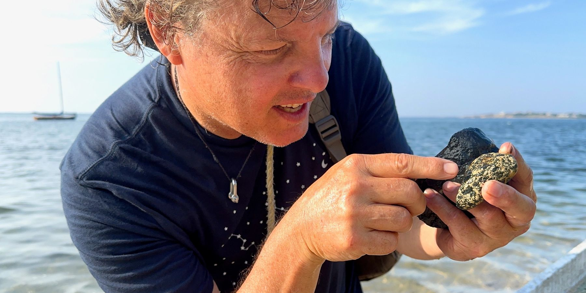
Dr. Rich Blundell
I'm an ecologist who studies how nature shapes human consciousness.
I've spent thirty years in Earth's wildest habitats from coral reefs to tundra, rainforest to the deep ocean, learning the intelligence of living systems.
My work is an attempt to reconnect human beings with a grounded source of ecological intelligence I call Oika.
PhD, Big History, Macquarie University Natural Historian, Maria Mitchell Association, Nantucket National Science Foundation production grants PBS, National Geographic Rockefeller Philanthropy Advisors USCG 100-Ton Master Creator of Oika® and Earthling Theory
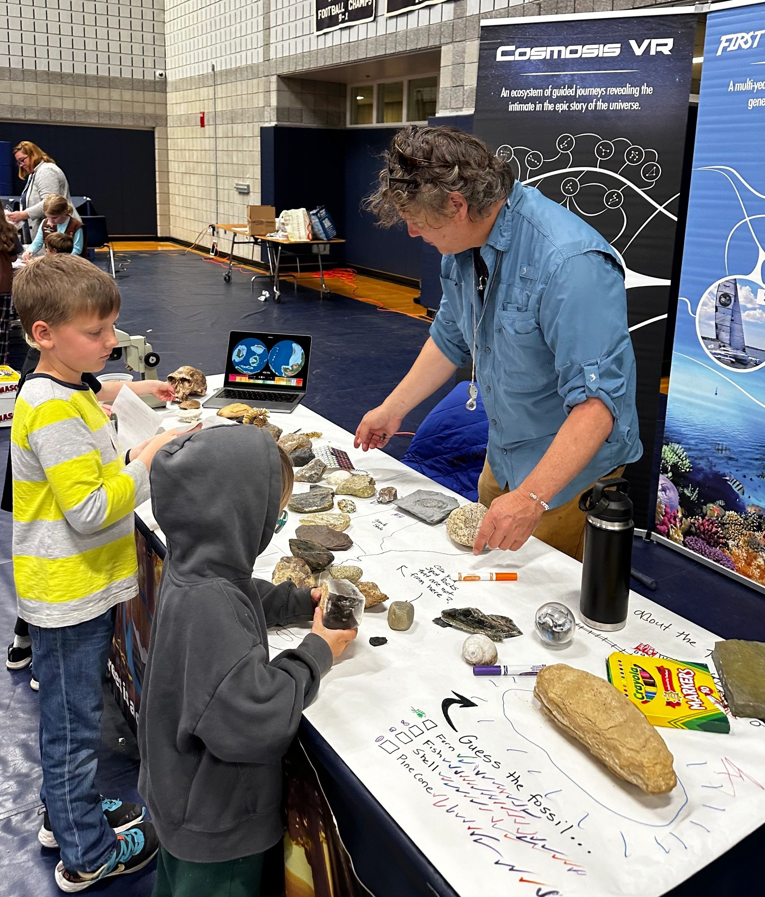
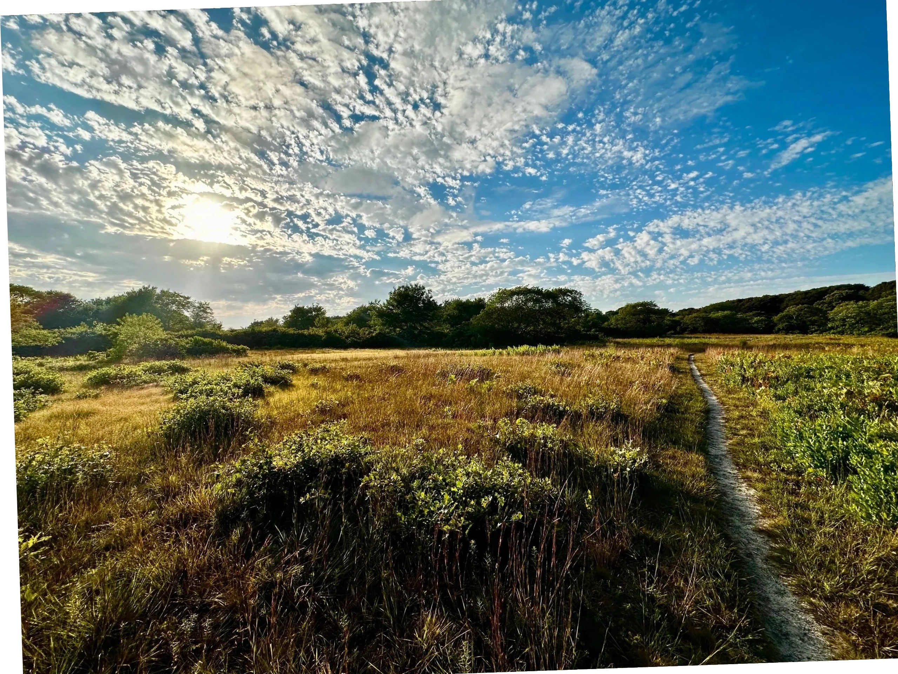
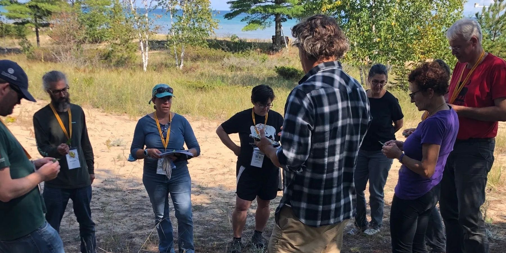
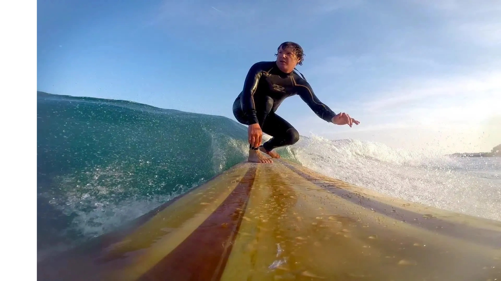
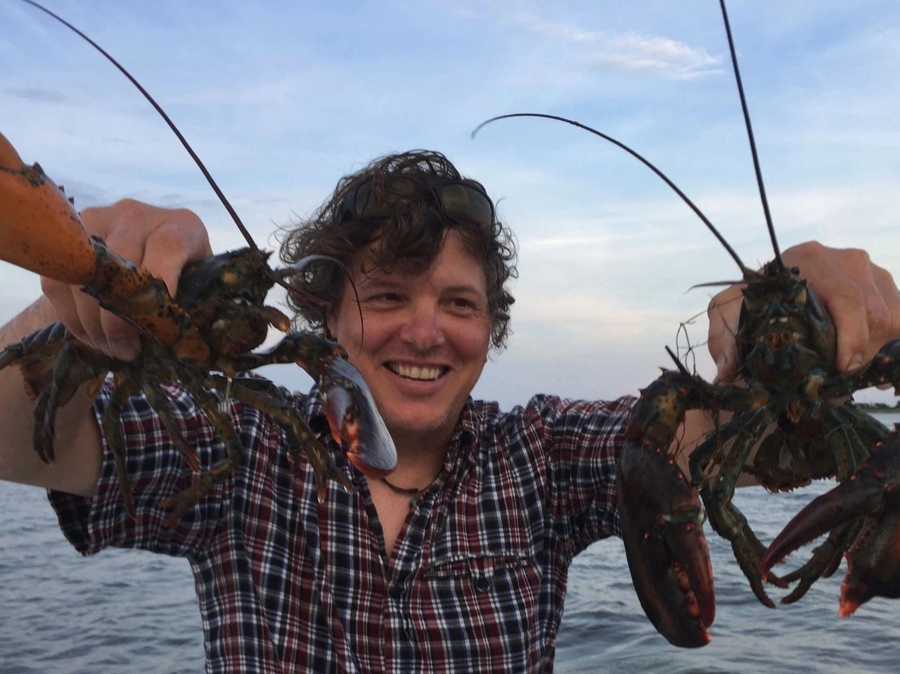
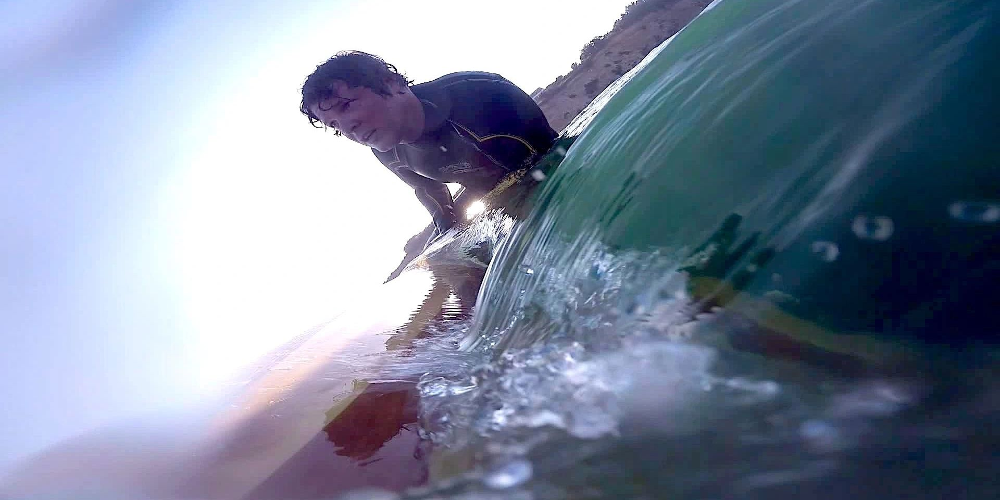
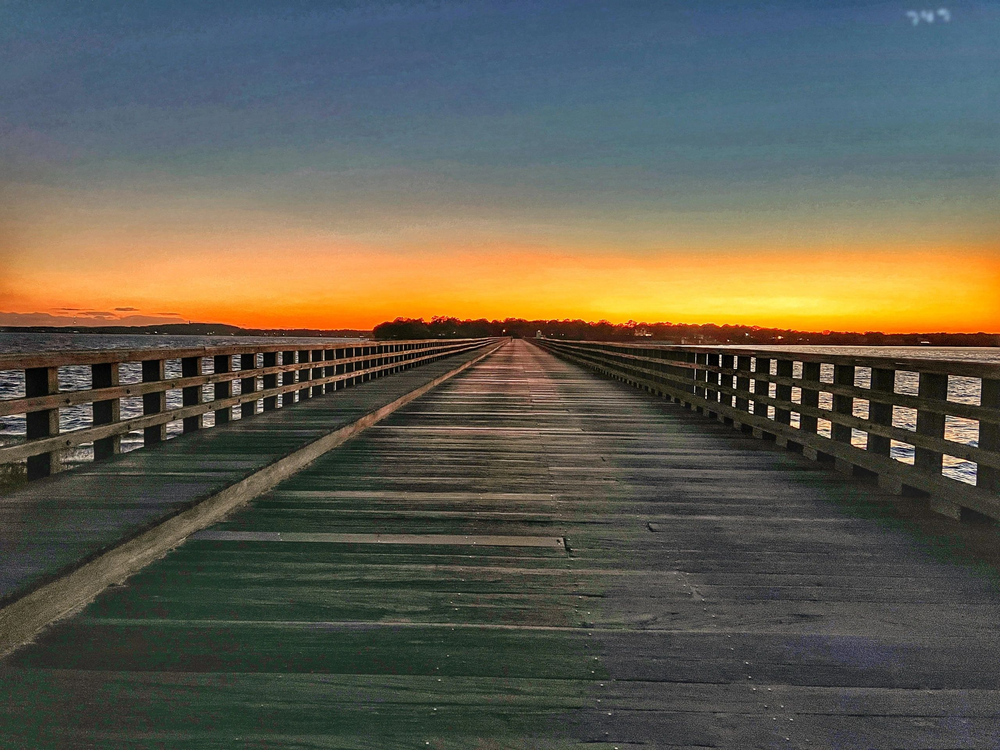
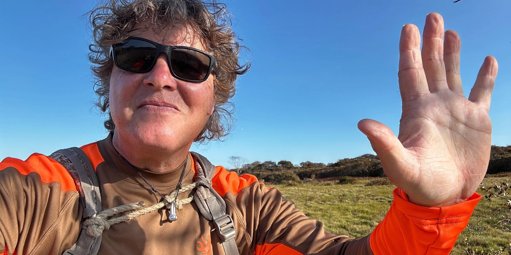
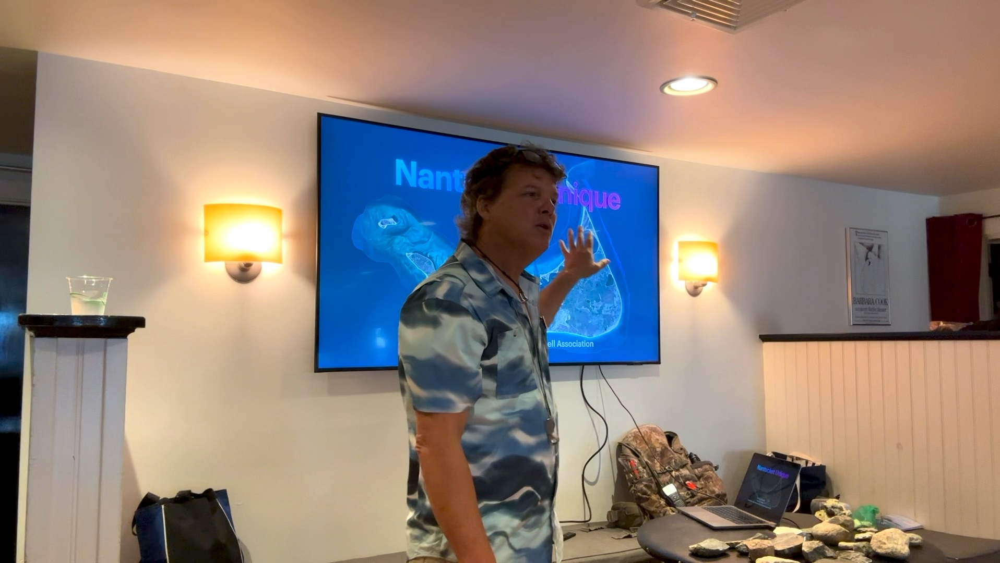
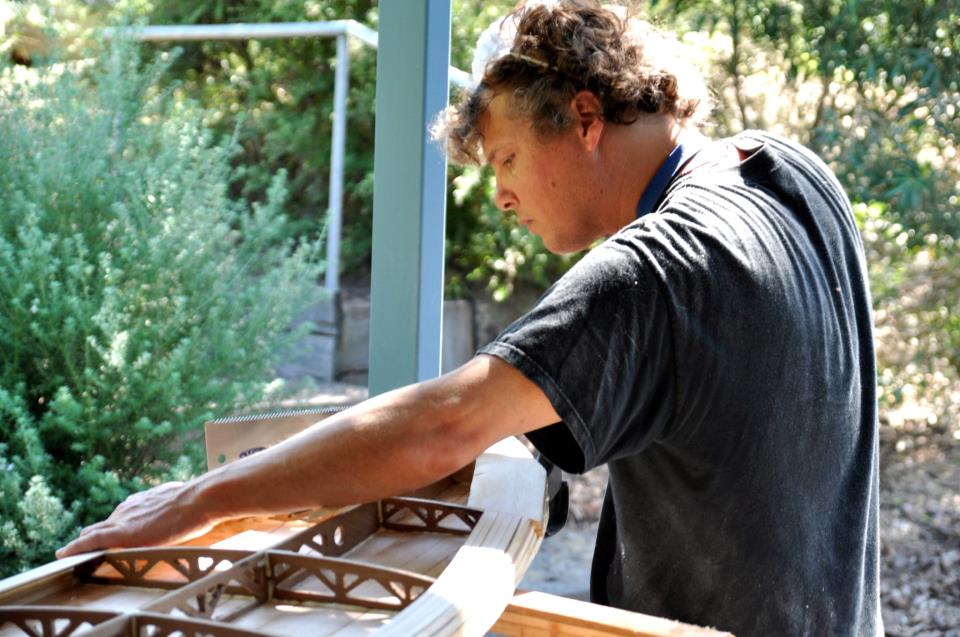